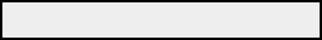

Заставка (Splashscreen) и предзаставка (Presplash)
Добавление заставки (Splashscreen)
Заставка (splashscreen) — это изображение или видеоролик, который отображается при запуске игры перед переходом в главное меню. Обычно это логотипы студии или вступительные ролики. Метка «splashscreen» автоматически выполняется перед показом главного меню. Однако тот же код применим и к заставкам, расположенным в любом месте вашей игры под другой меткой.
Чтобы добавить текстовую заставку в игру, вставьте приведённый ниже код в любое место ваших файлов скрипта (при условии, что он не находится внутри другого блока):
label splashscreen:
scene black
with Pause(1)
show text "American Bishoujo Presents..." with dissolve
with Pause(2)
hide text with dissolve
with Pause(1)
return
Вот ещё один пример заставки, на этот раз с использованием изображения и звука:
image splash = "splash.png"
label splashscreen:
scene black
with Pause(1)
play sound "ping.ogg"
show splash with dissolve
with Pause(2)
scene black with dissolve
with Pause(1)
return
И, наконец, пример с видеофайлом:
label splashscreen:
$ renpy.movie_cutscene('movie.ogv')
return
Добавление предзаставки (Presplash)
Предзаставка (presplash) — это изображение, показываемое в то время, пока Ren'Py считывает
скрипты и инициализирует игру. Чтобы отобразить такое изображение во время запуска движка,
создайте файл изображения с именем presplash.png, presplash.jpg,
presplash.webp или presplash.avif и сохраните его в каталоге игры (директории game).
- presplash.png (или .jpg, .webp, .avif)
Изображение, отображаемое при загрузке игры.
Это работает только на компьютерных платформах (настольных ОС), но не на Android, iOS или Web. Инструкции для платформы Android см. в разделе Презаставка (Presplash), а для Web — в разделе Web Presplash.
Переменная config.minimum_presplash_time задаёт минимальное время отображения предзаставки.
Добавление индикатора прогресса загрузки
Вместо статичного изображения также можно отобразить индикатор выполнения (progress bar), показывающий прогресс загрузки движка. Он заменяет обычное изображение presplash и автоматически получает приоритет, если предоставлены оба варианта.
Индикатор выполнения поддерживает стилизацию и требует наличия двух файлов в формате PNG, JPG, WEBP или AVIF:
- presplash_background.png (или .jpg, .webp, .avif)
Фоновое изображение индикатора прогресса. Оно отображается целиком во время запуска, поэтому его можно использовать для создания любого фона (например, рамки или сплошной подложки). Оно всегда должно быть полностью непрозрачным.
- presplash_foreground.png (или .jpg, .webp, .avif)
Передний план (заполняющаяся часть) индикатора прогресса. Оно проявляется слева направо по мере загрузки. Оно определяет внешний вид самой полосы прогресса. Может содержать прозрачность.
Ren'Py сначала отображает presplash_background.png, а затем поверх него отрисовывает
presplash_foreground.png, раскрывая его слева направо по мере процесса загрузки.
Оформление полосы загрузки остаётся полностью на ваше усмотрение. Ниже приведены два примера:


Пример фона полосы прогресса.

Пример переднего плана полосы прогресса.

Более сложный пример фона полосы прогресса.

Более сложный пример переднего плана полосы прогресса.
Прозрачная предзаставка (Transparent Presplash)
Если верхний левый пиксель фонового изображения предзаставки прозрачен, само окно предзаставки также будет прозрачным. Используется 1-битная прозрачность: пиксели со значением альфа 0 считаются прозрачными, а все остальные — непрозрачными.
Экраны предзаставки для мобильных платформ и Web
Платформы Android, iOS и Web используют собственные экраны предзаставки. Они описаны в соответствующих разделах документации:
Android: Презаставка (Presplash)